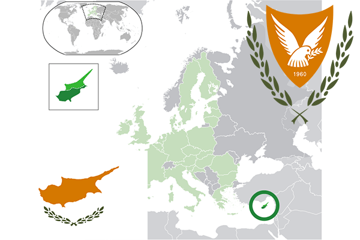

To`liq nomi: Kipr Respublikasi
Region: Janubiy-Sharqiy Yevropa
Qonunchilik shakli: Respublika
Mustaqillik kuni : 16-avgust 1960-yil (Birlashgan Qirollikdan)
Poytaxt: Nikosiya
Maydoni: 9250 km² (dunyoda 162 -o`rinda )
Chegaradosh davlatlari: yo`q
Aholisi: 1 142 575 (dunyoda 152 -o`rinda, 2012 -yil roʻyxat)
Aholi zichligi: 177 /km²
Aholining o`rtacha yoshi: 78,05 yil ( 80,5 ayollar, 75,6 erkaklar)
Rasmiy tili: Grek va turk tillari
Dini: Asosiy qismi pravoslav, kam qismi musulmon
Pul birligi: Yevro
Telefon prefiksi: +357
Internet domen: .cy
Xalqaro tashkilotlarga a`zoligi: BMT (1960 – yildan), Yevropa Ittifoqi (2004-yildan)
Dengiz va okeanlarga chiqishi: O`rtayer dengizi
YIM: Butun: $ 15,76 mlrd, Jon boshiga: $ 20 428 (2004 - yil roʻyxati)
Yirik shaharlari: Nikosiya, Limasol